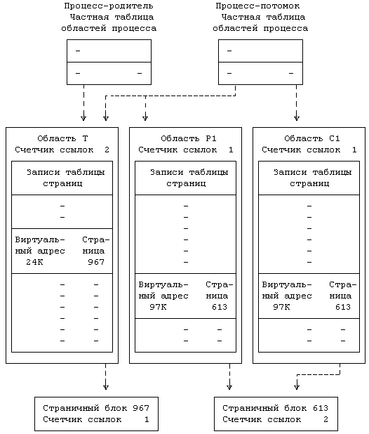
Рисунок 9.15. Адресация страниц, участвующих в процессе выполнения функции fork
В ходе выполнения функции fork в системе BSD создается физическая копия страниц родительского процесса. Однако, учитывая наличие ситуаций, в которых создание физической копии не является обязательным, в системе BSD существует также функция vfork, которая используется в том случае, если процесс сразу по завершении функции fork собирается запустить функцию exec. Функция vfork не копирует таблицы страниц, поэтому она работает быстрее, чем функция fork в версии V системы UNIX. Однако процесс-потомок при этом исполняется в тех же самых физических адресах, что и его родитель, и может поэтому затереть данные и стек родительского процесса. Если программист использует функцию vfork неверно, может возникнуть опасная ситуация, поэтому вся ответственность за ее использование возлагается на программиста. Различие в подходах к рассматриваемому вопросу в системах UNIX и BSD имеет философский характер, они дают разный ответ на один и тот же вопрос: следует ли ядру скрывать особенности реализации своих функций, превращая их в тайну для пользователей, или же стоит дать опытным пользователям возможность повысить эффективность выполнения системных операций?
int global;
main()
{
int local;
local = 1;
if (vfork() == 0)
{
/* потомок */
global = 2; /* запись в область данных родителя */
local = 3; /* запись в стек родителя */
_exit();
}
printf("global %d local %d\n",global,local);
}
|
Рисунок 9.16. Функция vfork и искажение информации процесса
В качестве примера рассмотрим программу, приведенную на Рисунке 9.16. После выполнения функции vfork процесс-потомок не запускает функцию exec, а переустанавливает значения переменных global и local и завершается (****). Система гарантирует, что процесс-родитель приостанавливается до того момента, когда потомок исполнит функции exec или exit. Возобновив в конечном итоге свое выполнение, процесс-родитель обнаружит, что значения двух его переменных не совпадают с теми значениями, которые были у них до обращения к функции vfork ! Еще больший эффект может произвести возвращение процесса-потомка из функции, вызвавшей функцию vfork (см. упражнение 9.8).
9.2.1.2 Функция exec в системе с замещением страниц
Как уже говорилось в главе 7, когда процесс обращается к системной функции exec, ядро считывает из файловой системы в память указанный исполняемый файл. Однако в системе с замещением страниц по запросу исполняемый файл, имеющий большой размер, может не уместиться в доступном пространстве основной памяти. Поэтому ядро не назначает ему сразу все пространство, а отводит место в памяти по мере надобности. Сначала ядро назначает файлу таблицы страниц и дескрипторы дисковых блоков, помечая страницы в записях таблиц как "заполняемые при обращении" (для всех данных, кроме имеющих тип bss) или "обнуляемые при обращении" (для данных типа bss). Считывая в память каждую страницу файла по алгоритму read, процесс получает ошибку из-за отсутствия (недоступности) данных. Подпрограмма обработки ошибок проверяет, является ли страница "заполняемой при обращении" (тогда ее содержимое будет немедленно затираться содержимым исполняемого файла и поэтому ее не надо очищать) или "обнуляемой при обращении" (тогда ее следует очистить). В разделе 9.2.3 мы увидим, как это происходит. Если процесс не может поместиться в памяти, "сборщик" страниц освобождает для него место, периодически откачивая из памяти неиспользуемые страницы.
В этой схеме видны явные недостатки. Во-первых, при чтении каждой страницы исполняемого файла процесс сталкивается с ошибкой из-за обращения к отсутствующей странице, пусть даже процесс никогда и не обращался к ней. Во-вторых, если после того, как "сборщик" страниц откачал часть страниц из памяти, была запущена функция exec, каждая только что выгруженная и вновь понадобившаяся страница потребует дополнительную операцию по ее загрузке. Чтобы повысить эффективность функции exec, ядро может востребовать страницу непосредственно из исполняемого файла, если данные в файле соответствующим образом настроены, что определяется значением т.н. "магического числа". Однако, использование стандартных алгоритмов доступа к файлу (например, bmap) потребовало бы при обращении к странице, состоящей из блоков косвенной адресации, больших затрат, связанных с многократным использованием буферного кэша для чтения каждого блока. Кроме того, функция bmap не является реентерабельной, отсюда возникает опасность нарушения целостности данных. Во время выполнения системной функции read ядро устанавливает в пространстве процесса значения различных параметров ввода-вывода. Если при попытке скопировать данные в пространство пользователя процесс столкнется с отсутствием нужной страницы, он, считывая страницу из файловой системы, может затереть содержащие эти параметры поля. Поэтому ядро не может прибегать к использованию обычных алгоритмов обработки ошибок данного рода. Конечно же алгоритмы должны быть в обычных случаях реентерабельными, поскольку у каждого процесса свое отдельное адресное пространство и процесс не может одновременно исполнять несколько системных функций.
Для того, чтобы считывать страницы непосредственно из исполняемого файла, ядро во время исполнения функции exec составляет список номеров дисковых блоков файла и присоединяет этот список к индексу файла. Работая с таблицами страниц такого файла, ядро находит дескриптор дискового блока, содержащего страницу, и запоминает номер блока внутри файла; этот номер позже используется при загрузке страницы из файла. На Рисунке 9.17 показан пример, в котором страница имеет адрес расположения в логическом блоке с номером 84 от начала файла. В области имеется указатель на индекс, в котором содержится номер соответствующего физического блока на диске (279).
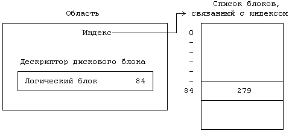
Рисунок 9.17. Отображение файла на область
"Сборщик" страниц (page stealer) является процессом, принадлежащим ядру операционной системы и выполняющим выгрузку из памяти тех страниц, которые больше не входят в состав рабочего множества пользовательского процесса. Этот процесс создается ядром во время инициализации системы и запускается в любой момент, когда в нем возникает необходимость. Он просматривает все активные незаблокированные области и увеличивает значение "возраста" каждой принадлежащей им страницы (заблокированные области пропускаются, но впоследствии, по снятии блокировки, тоже будут учтены). Когда процесс при работе со страницей, принадлежащей области, получает ошибку, ядро блокирует область, чтобы "сборщик" не смог выгрузить страницу до тех пор, пока ошибка не будет обработана.
Страница в памяти может находиться в двух состояниях: либо "дозревать", не будучи еще готовой к выгрузке, либо быть готовой к выгрузке и доступной для привязки к другим виртуальным страницам. Первое состояние означает, что процесс обратился к странице и поэтому страница включена в его рабочее множество. При обращении к странице в некоторых машинах аппаратно устанавливается бит упоминания, если же эта операция не выполняется, соответственно, и программные методы скорее всего используются другие (раздел 9.2.4). Если страница находится в первом состоянии, "сборщик" сбрасывает бит упоминания в ноль, но запоминает количество просмотров множества страниц, выполненных с момента последнего обращения к странице со стороны пользовательского процесса. Таким образом, первое состояние распадается на несколько подсостояний в соответствии с тем, сколько раз "сборщик" страниц обратился к странице до того, как страница стала готовой для выгрузки (см. Рисунок 9.18). Когда это число превышает некоторое пороговое значение, ядро переводит страницу во второе состояние - состояние готовности к выгрузке. Максимальная продолжительность пребывания страницы в первом состоянии зависит от условий конкретной реализации и ограничивается числом отведенных для этого поля разрядов в записи таблицы страниц.
На Рисунке 9.19 показано взаимодействие между процессами, работающими со страницей, и "сборщиком" страниц. Цифры обозначают номер обращения "сборщика" к странице с того момента, как страница была загружена в память. Процесс, обратившийся к странице после второго просмотра страниц "сборщиком", сбросил ее "возраст" в 0. После каждого просмотра пользовательский процесс обращался к странице вновь, но в конце концов "сборщик" страниц осуществил три просмотра страницы с момента последнего обращения к ней со стороны пользовательского процесса и выгрузил ее из памяти.
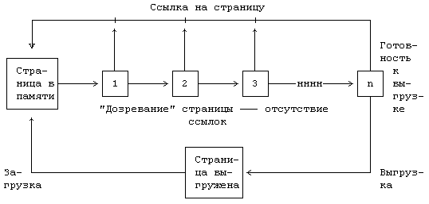
Рисунок 9.18. Диаграмма состояний страницы
Если область используется совместно не менее, чем двумя процессами, все они работают с битами упоминания в одном и том же наборе записей таблицы страниц. Таким образом, страницы могут включаться в рабочие множества нескольких процессов, но для "сборщика" страниц это не имеет никакого значения. Если страница включена в рабочее множество хотя бы одного из процессов, она остается в памяти; в противном случае она может быть выгружена. Ничего, что одна область, к примеру, имеет в памяти страниц больше, чем имеют другие: "сборщик" страниц не пытается выгрузить равное количество страниц из всех активных областей.
Ядро возобновляет работу "сборщика" страниц, когда доступная в системе свободная память имеет размер, не дотягивающий до нижней допустимой отметки, и тогда "сборщик" производит откачку страниц до тех пор, пока объем свободной памяти не превысит верхнюю отметку. При использовании двух отметок количество производимых операций сокращается, ибо если ядро использует только одно пороговое значение, оно будет выгружать достаточное число страниц для освобождения памяти свыше порогового значения, но в результате возвращения ошибочно выгруженных страниц в память размер свободного пространства вскоре вновь опустится ниже этого порога. Объем свободной памяти при этом постоянно бы поддерживался около пороговой отметки. Выгрузка страниц с освобождением памяти в объеме, превышающем верхнюю отметку, откладывает момент, когда объем свободной памяти в системе станет меньше нижней отметки, поэтому "сборщику" страниц не приходится уже так часто выполнять свою работу. Оптимальный выбор уровней верхней и нижней отметок администратором повышает производительность системы.
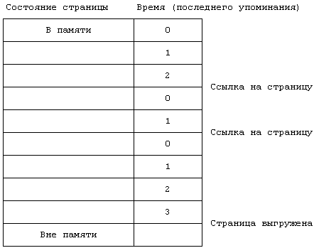
Рисунок 9.19. Пример "созревания" страницы
Когда "сборщик" страниц принимает решение выгрузить страницу из памяти, он проверяет возможность нахождения копии этой страницы на устройстве выгрузки. При этом могут иметь место три случая:
- Если на устройстве выгрузки есть копия страницы, ядро "планирует" выгрузку страницы: "сборщик" страниц помещает ее в список выгруженных страниц и переходит дальше; выгрузка считается логически завершившейся. Когда число страниц в списке превысит ограничение (определяемое возможностями дискового контроллера), ядро переписывает страницы на устройство выгрузки.
- Если на устройстве выгрузки уже есть копия страницы и ее содержимое ничем не отличается от содержимого страницы в памяти (бит модификации в записи таблицы страниц не установлен), ядро сбрасывает в ноль бит доступности (в той же записи таблицы), уменьшает значение счетчика ссылок в таблице pfdata и помещает запись в список свободных страниц для будущего переназначения.
- Если на устройстве выгрузки есть копия страницы, но процесс изменил содержимое ее оригинала в памяти, ядро планирует выгрузку страницы и освобождает занимаемое ее копией место на устройстве выгрузки.
"Сборщик" страниц копирует страницу на устройство выгрузки, если имеют место случаи 1 и 3.
Чтобы проиллюстрировать различия между последними двумя случаями, предположим, что страница находится на устройстве выгрузки и загружается в основную память после того, как процесс столкнулся с отсутствием необходимых данных. Допустим, ядро не стало автоматически удалять копию страницы на диске. В конце концов, "сборщик" страниц вновь примет решение выгрузить страницу. Если с момента загрузки в память в страницу не производилась запись данных, содержимое страницы в памяти идентично содержимому ее дисковой копии и в переписи страницы на устройство выгрузки необходимости не возникает. Однако, если процесс успел что-то записать на страницу, старый и новый ее варианты будут различаться, поэтому ядру следует переписать страницу на устройство выгрузки, освободив предварительно место, занимаемое на устройстве старым вариантом. Ядро не сразу использует освобожденное пространство на устройстве выгрузки, поэтому оно имеет возможность поддерживать непрерывное размещение занятых участков, что повышает эффективность использования области выгрузки.
"Сборщик" страниц заполняет список выгруженных страниц, которые в принципе могут принадлежать разным областям, и по заполнении списка откачивает их на устройство выгрузки. Нет необходимости в том, чтобы все страницы одного процесса непременно выгружались: к примеру, некоторые из страниц, возможно, недостаточно "созрели" для этого. В этом видится различие со стратегией выгрузки процессов, согласно которой из памяти выгружаются все страницы одного процесса, вместе с тем метод переписи данных на устройство выгрузки идентичен тому методу, который описан для системы с замещением процессов в разделе 9.1.2. Если на устройстве выгрузки недостаточно непрерывного пространства, ядро выгружает страницы по отдельности (по одной странице за операцию), что в конечном итоге обходится недешево. В системе с замещением страниц фрагментация на устройстве выгрузки выше, чем в системе с замещением процессов, поскольку ядро выгружает блоки страниц, но загружает в память каждую страницу в отдельности.
Когда ядро переписывает страницу на устройство выгрузки, оно сбрасывает бит доступности в соответствующей записи таблицы страниц и уменьшает значение счетчика ссылок в соответствующей записи таблицы pfdata. Если значение счетчика становится равным 0, запись таблицы pfdata помещается в конец списка свободных страниц и запоминается для последующего переназначения. Если значение счетчика отлично от 0, это означает, что страница (в результате выполнения функции fork) используется совместно несколькими процессами, но ядро все равно выгружает ее. Наконец, ядро выделяет пространство на устройстве выгрузки, сохраняет его адрес в дескрипторе дискового блока и увеличивает значение счетчика ссылок на страницу в таблице использования области подкачки. Если в то время, пока страница находится в списке свободных страниц, процесс обнаружил ее отсутствие, получив соответствующую ошибку, ядро может восстановить ее в памяти, не обращаясь к устройству выгрузки. Однако, страница все равно будет считаться выгруженной, если она попала в список "сборщика" страниц.
Предположим, к примеру, что "сборщик" страниц выгружает 30, 40, 50 и 20 страниц из процессов A, B, C и D, соответственно, и что за одну операцию выгрузки на дисковое устройство откачиваются 64 страницы. На Рисунке 9.20 показана последовательность имеющих при этом место операций выгрузки при условии, что "сборщик" страниц осуществляет просмотр страниц процессов в очередности: A, B, C, D. "Сборщик" выделяет на устройстве выгрузки место для 64 страниц и выгружает 30 страниц процесса A и 34 страницы процесса B. Затем он выделяет место для следующих 64 страниц и выгружает оставшиеся 6 страниц процесса B, 50 страниц процесса C и 8 страниц процесса D. Выделенные для размещения страниц за две операции участки области выгрузки могут быть и несмежными. "Сборщик" сохраняет оставшиеся 12 страниц процесса D в списке выгружаемых страниц, но не выгружает их до тех пор, пока список не будет заполнен до конца. Как только у процессов возникает потребность в подкачке страниц с устройства выгрузки или если страницы больше не нужны использующим их процессам (процессы завершились), в области выгрузки освобождается место.
Чтобы подвести итог, выделим в процессе откачки страницы из памяти две фазы. На первой фазе "сборщик" страниц ищет страницы, подходящие для выгрузки, и помещает их номера в список выгружаемых страниц. На второй фазе ядро копирует страницу на устройство выгрузки (если на нем имеется место), сбрасывает в ноль бит допустимости в соответствующей записи таблицы страниц, уменьшает значение счетчика ссылок в соответствующей записи таблицы pfdata и если оно становится равным 0, помещает эту запись в конец списка свободных
страниц. Содержимое физической страницы в памяти не изменяется до тех пор,
пока страница не будет переназначена другому процессу.
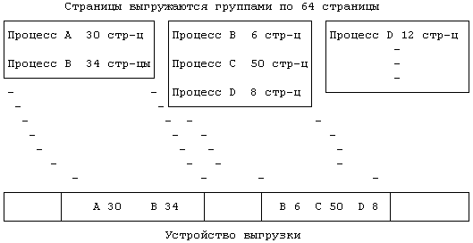
Рисунок 9.20. Выделение пространства на устройстве выгрузки в
системе с замещением страниц
В системе встречаются два типа отказов при обращении к странице: отказы из-за отсутствия (недоступности) данных и отказы системы защиты. Поскольку программы обработки прерываний по отказу могут приостанавливать свое выполнение на время считывания страницы с диска в память, эти программы являются исключением из общего правила, утверждающего невозможность приостанова обработчиков прерываний. Тем не менее, поскольку программа обработки прерываний по отказу приостанавливается в контексте процесса, породившего фатальную ошибку памяти, отказ относится к текущему процессу; следовательно, процессы приостанавливаются не произвольным образом.
9.2.3.1 Обработка прерываний по отказу из-за недоступности данных
Если процесс пытается обратиться к странице, бит доступности для которой не установлен, он получает отказ из-за отсутствия (недоступности) данных и ядро запускает программу обработки прерываний по отказу данного типа (Рисунок 9.21). Бит доступности не устанавливается ни для тех страниц, которые располагаются за пределами виртуального адресного пространства процесса, ни для тех, которые входят в состав этого пространства, но не имеют в настоящий момент физического аналога в памяти. Фатальная ошибка памяти произошла в результате обращения ядра по виртуальному адресу страницы, поэтому ядро выходит на соответствующую этой странице запись в таблице страниц и дескриптор дискового блока. Чтобы предотвратить взаимную блокировку, которая может произойти, если "сборщик" попытается выгрузить страницу из памяти, ядро фиксирует в памяти область с соответствующей записью таблицы страниц. Если в дескрипторе дискового блока отсутствует информация о странице, сделанная ссылка на страницу является недопустимой и ядро посылает процессу-нарушителю сигнал о "нарушении сегментации" (см. Рисунок 7.25). Такой порядок действий совпадает с тем порядком, которого придерживается ядро, когда процесс обратился по неверному адресу, если не принимать во внимание то обстоятельство, что ядро узнает об ошибке немедленно, так как все "доступные" страницы являются резидентными в памяти. Если ссылка на страницу сделана правильно, ядро выделяет физическую страницу в памяти и считывает в нее содержимое виртуальной страницы с устройства выгрузки или из исполняемого файла.
Страница, вызвавшая отказ, находится в одном из пяти состояний:
- На устройстве выгрузки вне памяти.
- В списке свободных страниц в памяти.
- В исполняемом файле.
- С пометкой "обнуляемая при обращении".
- С пометкой "заполняемая при обращении".
Рассмотрим каждый случай в подробностях.
Если страница находится на устройстве выгрузки, вне памяти (случай 1), это означает, что она когда-то располагалась в памяти, но была выгружена оттуда "сборщиком" страниц. Обратившись к дескриптору дискового блока, ядро узнает из него номера устройства выгрузки и блока, где расположена страница, и проверяет, не осталась ли страница в кэше. Ядро корректирует запись таблицы страниц так, чтобы она указывала на страницу, которую предполагается считать в память, включает соответствующую запись таблицы pfdata в хеш-очередь (облегчая последующую обработку отказа) и считывает страницу с устройства выгрузки. Допустивший ошибку процесс приостанавливается до момента завершения ввода-вывода; вместе с ним будут возобновлены все процессы, ожидавшие загрузки содержимого страницы.
Обратимся к Рисунку 9.22 и в качестве примера рассмотрим запись таблицы страниц, связанную с виртуальным адресом 66К. Если при обращении к странице процесс получает отказ из-за недоступности данных, программа обработки отказа обращается к дескриптору дискового блока и обнаруживает то, что страница находится на устройстве выгрузки в блоке с номером 847 (если предположить, что в системе только одно устройство выгрузки): следовательно, виртуальный адрес указан верно. Затем программа обработки отказа обращается к кэшу, но не находит информации о дисковом блоке с номером 847. Таким образом, копия виртуальной страницы в памяти отсутствует и программа обработки отказа должна загрузить ее с устройства выгрузки. Ядро отводит физическую страницу с номером 1776 (Рисунок 9.23), считывает в нее с устройства выгрузки содержимое виртуальной страницы и перенастраивает запись таблицы страниц на страницу с номером 1776. В завершение ядро корректирует дескриптор дискового блока, делая указание о том, что страница загружена, а также запись таблицы pfdata, отмечая, что на устройстве выгрузки в блоке с номером 847 содержится дубликат виртуальной страницы.
алгоритм vfault /* обработка отказа из-за отсутствия
(недоступности) данных */
входная информация: адрес, по которому получен отказ
выходная информация: отсутствует
{
найти область, запись в таблице страниц, дескриптор дис-
кового блока, связанные с адресом, по которому получен
отказ, заблокировать область;
если (адрес не принадлежит виртуальному адресному прост-
ранству процесса)
{
послать сигнал (SIGSEGV: нарушение сегментации) про-
цессу;
перейти на out;
}
если (адрес указан неверно) /* возможно, процесс нахо-
дился в состоянии при-
останова */
перейти на out;
если (страница имеется в кэше)
{
убрать страницу из кэша;
поправить запись в таблице страниц;
выполнять пока (содержимое страницы не станет доступ-
ным) /* другой процесс получил такой же отказ,
* но раньше */
приостановиться;
}
в противном случае /* страница отсутствует в кэше */
{
назначить области новую страницу;
поместить новую страницу в кэш, откорректировать за-
пись в таблице pfdata;
если (страница ранее не загружалась в память и имеет
пометку "обнуляемая при обращении")
очистить содержимое страницы;
в противном случае
{
считать виртуальную страницу с устройства выгруз-
ки или из исполняемого файла;
приостановиться (до завершения ввода-вывода);
}
возобновить процессы (ожидающие загрузки содержимого
страницы);
}
установить бит доступности страницы;
сбросить бит модификации и "возраст" страницы;
пересчитать приоритет процесса;
out: снять блокировку с области;
}
|
Рисунок 9.21. Алгоритм обработки отказа из-за отсутствия (недоступности) данных
При обработке отказов из-за недоступности данных ядро не всегда прибегает к выполнению операции ввода-вывода, даже когда из дескриптора дискового блока видно, что страница загружена (в случае 2). Может случиться так, что ядро после выгрузки содержимого физической страницы так и не переприсвоило ее или же какой-то иной процесс в результате отказа загрузил содержимое виртуальной страницы в другую физическую страницу. В любом случае программа обработки отказа обнаруживает страницу в кэше, в качестве ключа используя номер блока в дескрипторе дискового блока. Она перенастраивает соответствующую запись в таблице страниц на только что найденную страницу, увеличивает значение счетчика ссылок на страницу и в случае необходимости убирает страницу из списка свободных страниц. Предположим, к примеру, что процесс получил отказ при обращении к виртуальному адресу 64К (Рисунок 9.22). Просматривая кэш, ядро устанавливает, что страничный блок с номером 1861 связан с дисковым блоком 1206. Ядро перенастраивает запись таблицы страниц с виртуальным адресом 64К на страницу с номером 1861, устанавливает бит доступности и передает управление программе обработки отказа. Таким образом, номер дискового блока связывает вместе записи таблицы страниц и таблицы pfdata, чем и объясняется его запоминание в обеих таблицах.
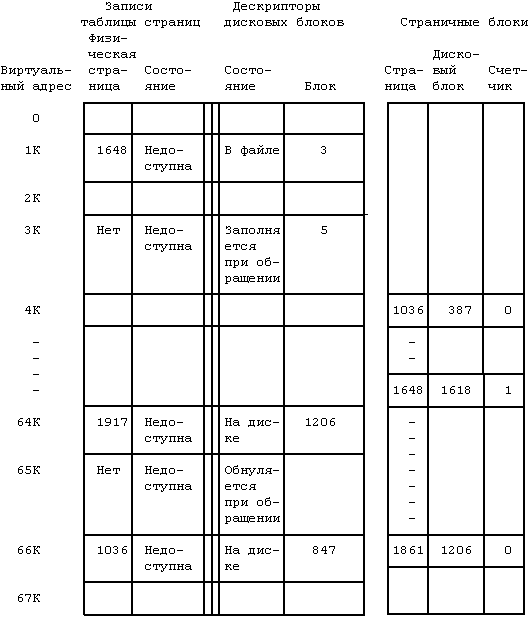
Рисунок 9.22. Иллюстрация к отказу из-за недоступности данных
Как и ядру, программе обработки отказа не нужно считывать страницу в память, если какой-то иной процесс уже получил отказ по той же самой странице, но еще не полностью загрузил ее. Программа находит область с записью таблицы страниц, которую она уже ранее заблокировала. Она дожидается, пока будет закончен цикл обработки предыдущего отказа, после чего обнаруживает, что страница стала доступной, и завершает свою работу. Эта процедура прослеживается на Рисунке 9.24.
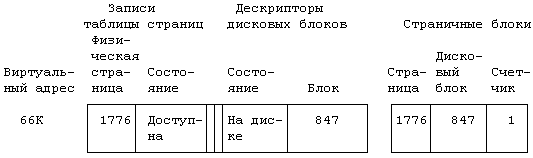
Рисунок 9.23. Результат загрузки страницы в память
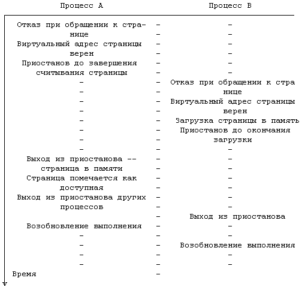
Рисунок 9.24. Два отказа на одной странице
Если копия страницы находится не на устройстве выгрузки, а в исполняемом файле (случай 3), ядро загружает страницу из файла. Программа обработки отказа обращается к дескриптору дискового блока, ищет соответствующий номер логического блока внутри файла, содержащего страницу, и индекс, ассоциированный с записью таблицы областей. Номер логического блока используется программой в качестве смещения внутри списка номеров дисковых блоков, присоединенного к индексу во время выполнения функции exec. По номеру блока на диске программа считывает страницу в память. Так, например, дескриптор дискового блока, связанный с виртуальным адресом 1К, показывает, что содержимое страницы располагается в исполняемом файле, внутри логического блока с номером 3 (см. Рисунок 9.22).
Если процесс получил отказ при обращении к странице, имеющей пометку "заполняемая при обращении" или "обнуляемая при обращении" (случаи 4 и 5), ядро выделяет свободную страницу в памяти и корректирует соответствующую запись таблицы страниц. Если страница "обнуляемая при обращении", ядро также очищает ее содержимое. В завершение обработки флаги "заполняемая при обращении" и "обнуляемая при обращении" сбрасываются. Теперь страница находится в памяти, доступна процессам и ее содержимое не имеет аналогов ни на устройстве выгрузки, ни в файловой системе. Так происходит, если процесс обращается к страницам с виртуальными адресами 3К и 65К (см. Рисунок 9.22): ни один из процессов не обращался к этим страницам с тех пор, как файл был запущен на выполнение функцией exec.
В завершение своей работы программа обработки отказов из-за отсутствия (недоступности) данных устанавливает бит доступности страницы и сбрасывает бит модификации. Приоритет процесса при этом пересчитывается, ибо во время выполнения программы процесс мог приостановить свое выполнение на уровне ядра, получая тем самым по возвращении в режим задачи незаслуженное преимущество перед другими процессами. И, наконец, возвращаясь в режим задачи, программа проверяет, не было ли за время обработки отказа поступления каких-либо сигналов.
9.2.3.2 Обработка прерываний по отказу системы защиты
Вторым типом отказа, встречающегося при обращении к странице, является отказ системы защиты, который означает, что процесс обратился к существующей странице памяти, но судя по разрядам, описывающим права доступа к странице, доступ к ней со стороны текущего процесса не разрешен. (Вспомним пример, описывающий попытку процесса произвести запись данных в область команд; см. Рисунок 7.22). Отказ данного типа имеет место также тогда, когда процесс предпринимает попытку записать что-то на страницу, для которой во время выполнения системной функции fork был установлен бит копирования при записи. Ядро должно различать между собой ситуации, когда отказ произошел по причине того, что страница требует копирования при записи, и когда имело место действительно что-то недопустимое.
Программа обработки отказа системы защиты автоматически получает виртуальный адрес, по которому произошел отказ, и ведет поиск соответствующей области и записи таблицы страниц (Рисунок 9.25). Она блокирует область, чтобы "сборщик" страниц не мог выгрузить страницу, пока связанный с ней отказ не будет обработан. Если программа обработки отказа устанавливает, что причиной отказа послужила установка бита копирования при записи, и если страницу используют сразу несколько процессов, ядро выделяет в памяти новую страницу и копирует в нее содержимое старой страницы; ссылки других процессов на старую страницу сохраняют свое значение. После копирования и внесения в запись таблицы страниц нового номера страницы ядро уменьшает значение счетчика ссылок в записи таблицы pfdata, соответствующей старой странице. Вся процедура показана на Рисунке 9.26, где три процесса совместно используют физическую страницу с номером 828. Процесс B считывает страницу, но поскольку бит копирования при записи установлен, получает отказ системы защиты. Программа обработки отказа выделяет страницу с номером 786, копирует в нее содержимое страницы 828, уменьшает значение счетчика ссылок на скопированную страницу и перенастраивает соответствующую запись таблицы страниц на страницу с номером 786.
Если бит копирования при записи установлен, но страница используется только одним процессом, ядро дает процессу возможность воспользоваться физической страницей повторно. Оно отключает бит копирования при записи и разрывает связь страницы с ее копией на диске (если таковая существует), поскольку не исключена возможность того, что дисковой копией пользуются другие процессы. Затем ядро убирает запись таблицы pfdata из очереди страниц, ибо новая копия виртуальной страницы располагается не на устройстве выгрузки. Кроме того, ядро уменьшает значение счетчика ссылок на страницу в таблице использования области подкачки, и если это значение становится равным 0, освобождает место на устройстве (см. упражнение 9.11).
Если запись в таблице страниц указывает на то, что страница недоступна, и ее бит копирования при записи установлен, выступая поводом для отказа системы защиты, допустим, что система при обращении к странице сначала обрабатывает отказ из-за недоступности данных (обратная очередность рассматривается в упражнении 9.17). Несмотря на это, программа обработки отказа системы защиты все равно обязана убедиться в доступности страницы, поскольку при установке блокировки на область программа может приостановиться, а "сборщик" страниц тем временем может выгрузить страницу из памяти. Если страница недоступна (бит доступности сброшен), программа немедленно завершит работу и процесс получит отказ из-за недоступности данных. Ядро обработает этот отказ, но процесс вновь получит отказ системы защиты. Более чем вероятно, что заключительный отказ системы защиты будет обработан без каких-либо препятствий и помех, поскольку пройдет довольно значительный период времени, прежде чем страница достаточно "созреет" для выгрузки из памяти. Описанная последовательность событий показана на Рисунке 9.27.
алгоритм pfault /* обработка отказа системы защиты */
входная информация: адрес, по которому получен отказ
выходная информация: отсутствует
{
найти область, запись в таблице страниц, дескриптор дис-
кового блока, связанные с адресом, по которому получен
отказ, заблокировать область;
если (страница недоступна в памяти)
перейти на out;
если (бит копирования при записи не установлен)
перейти на out; /* программная ошибка - сигнал */
если (счетчик ссылок на страничный блок > 1)
{
выделить новую физическую страницу;
скопировать в нее содержимое старой страницы;
уменьшить значение счетчика ссылок на старый стра-
ничный блок;
перенастроить запись таблицы страниц на новую физи-
ческую страницу;
}
в противном случае /* убрать страницу, поскольку она
* никем больше не используется */
{
если (копия страницы имеется на устройстве выгрузки)
освободить место на устройстве, разорвать связь
со страницей;
если (страница находится в хеш-очереди страниц)
убрать страницу из хеш-очереди;
}
в записи таблицы страниц установить бит модификации,
сбросить бит копирования при записи;
пересчитать приоритет процесса;
проверить, не поступали ли сигналы;
out: снять блокировку с области;
}
|
Рисунок 9.25. Алгоритм обработки отказа системы защиты
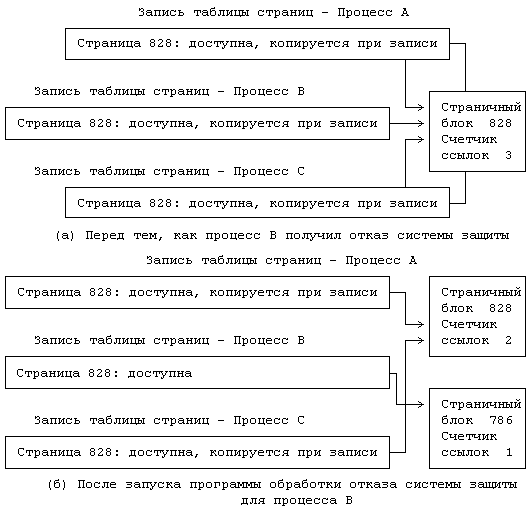
Рисунок 9.26. Отказ системы защиты из-за установки бита копирования при записи
Перед завершением программа обработки отказа системы защиты устанавливает биты модификации и защиты, но сбрасывает бит копирования при записи. Она пересчитывает приоритет процесса и проверяет, не поступали ли за время ее работы сигналы, предназначенные процессу, в точности повторяя то, что делается по завершении обработки отказа из-за недопустимости данных.
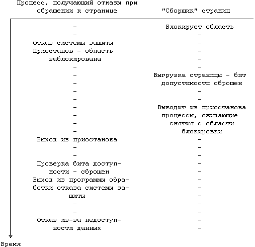
Рисунок 9.27. Взаимодействие отказа системы защиты и отказа
из-за недоступности данных
Наибольшая действенность алгоритмов замещения страниц по запросу (обращению) достигается в том случае, если биты упоминания и модификации устанавливаются аппаратным путем и тем же путем вызывается отказ системы защиты при попытке записи в страницу, имеющую признак "копирования при записи". Тем не менее, указанные алгоритмы вполне применимы даже тогда, когда аппаратура распознает только бит доступности и код защиты. Если бит доступности, устанавливаемый аппаратно, дублируется программно-устанавливаемым битом, показывающим, действительно ли страница доступна или нет, ядро могло бы отключить аппаратно-устанавливаемый бит и проимитировать установку остальных битов программным путем. Так, например, в машине VAX-11 бит упоминания отсутствует (см. [Levy 82]). Ядро может отключить аппаратно-устанавливаемый бит доступности для страницы и дальше работать по следующему плану. Если процесс ссылается на страницу, он получает отказ, поскольку бит доступности сброшен, и в игру вступает программа обработки отказа, исследующая страницу. Поскольку "программный" бит доступности установлен, ядро знает, что страница действительно доступна и находится в памяти; оно устанавливает "программный" бит упоминания и "аппаратный" бит доступности, но ему еще предстоит узнать о том, что на страницу была сделана ссылка. Последующие ссылки на страницу уже не встретят отказ, ибо "аппаратный" бит доступности установлен. Когда с ней будет работать "сборщик" страниц, он вновь сбросит "аппаратный" бит доступности, вызывая тем самым от казы на все последующие обращения к странице и возвращая систему к началу цикла. Этот случай показан на Рисунке 9.28.
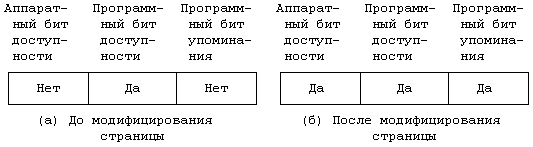
Рисунок 9.28. Имитация установки "аппаратного" бита модификации программными средствами
(***) Если при исполнении команды возникает ошибка, связанная с отсутствием страницы, после обработки ошибки ЦП обязан перезапустить команду, поскольку промежуточные результаты, полученные к моменту возникновения ошибки, могут быть утрачены.
(****) Функция exit используется в варианте _exit, потому что она "очищает" структуры данных, передаваемые через стандартный ввод-вывод (на пользовательском уровне), для обоих процессов, так что оператор printf, используемый родителем, не даст правильный результат - еще один нежелательный побочный эффект от применения функции vfork.
Предыдущая глава || Оглавление || Следующая глава
| | |